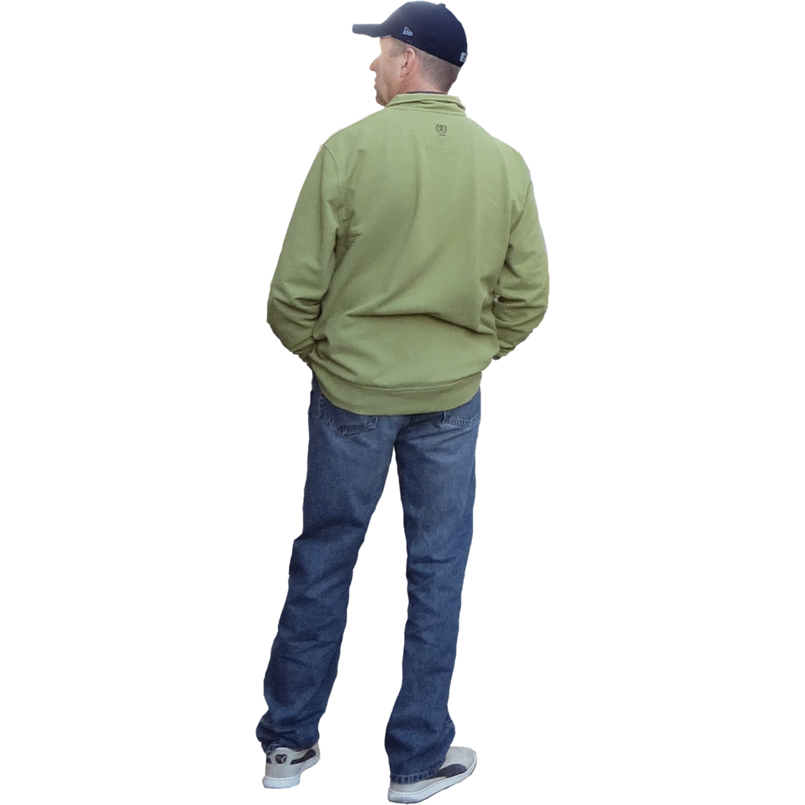
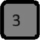

Edvard Munch skapte den første versjonen av Skrik i 1893. Det er et av de mest ikoniske bildene i kunsthistorien, ofte omtalt som "modernismens Mona Lisa". Maleriet viser en androgyn, hodeskallelignende skikkelse som står på en bro og holder hendene for ørene under en virvlende, blodrød himmel. Munch beskrev inspirasjonen i dagboken sin: «Jeg gikk langs veien med to venner da solen gikk ned; plutselig ble himmelen blodrød. Jeg stoppet og lente meg mot gjerdet, følte meg ubeskrivelig sliten... Jeg hørte naturens enorme, uendelige skrik.»
Verket er et sentralt stykke i Munchs Livsfrisen, som utforsker temaer som kjærlighet, angst og død. Munch lagde fire hovedversjoner av motivet mellom 1893 og 1910: to oljemalerier og to pasteller. Maleriet fra 1893 tilhører Nasjonalmuseet i Oslo, mens en senere versjon fra 1910 tilhører Munchmuseet.
I dag er Skrik en globalt gjenkjennelig figur som fortsatt preger populærkulturen, fra filmer og memes til mote og reklame. I 2018 lanserte Pokémon et samlekort-sett der Pikachu, Eevee, Psyduck, Mimikyu og Rowlet gjenskaper den ikoniske skrik-posituren. Kortene, som ble laget i forbindelse med en Munch-utstilling i Tokyo, er i dag svært ettertraktede samlerobjekter som viser hvordan klassisk kunst fortsetter å inspirere nye generasjoner.


Skrik er et av verdens mest kjente malerier, og det har også vært utsatt for flere dristige tyverier. I 1994 ble en versjon stjålet fra Nasjonalgalleriet i Oslo. Tyvene brøt seg inn gjennom et vindu, klatret opp en stige og tok bildet mens museet var stengt. Tyveriet vakte enorm oppmerksomhet, og bildet ble gjenfunnet etter noen måneder.
I 2004 ble en annen versjon av Skrik, sammen med Madonna, stjålet fra Munchmuseet i Oslo. Denne gangen skjedde det midt på lyse dagen, da væpnede ranere truet ansatte og besøkende. Også denne gangen ble bildene gjenfunnet, men det tok to år. Disse hendelsene har gjort Skrik til et symbol ikke bare på kunstnerisk geni, men også på sikkerhetsutfordringene ved å huse uvurderlige kunstverk.